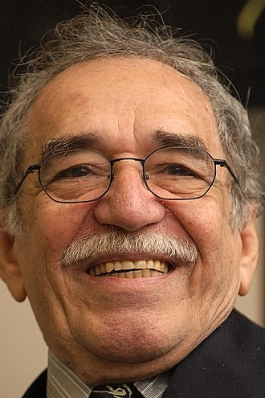

.Gabriel García Márquez [ 1927 - 2014 ]
Chắc chắn rằng Gabriel García Márquez [1927 - 2014 ] là ông vua của ngôn từ. Tất cả những gì mà ông sờ đến đều biến thành từ ngữ. Ở ông không có những lời rập khuôn, sáo mòn. Ngôn ngữ bao giờ cũng trong sáng, sắc cạnh, ông làm cho những hòn đá phẳng lì ánh lên sau cơn mưa mùa hạ, hoặc đặt chúng vào cuối dòng suối nhỏ làm thành dòng thác bắn tung tóe lên trong ánh sáng chan hòa. Nếu có ai hoài nghi đối với cái kho ngôn từ đầy sinh sắc cũng như cái biệt tài sử dụng ngôn từ của ông thì phải đọc tác phẩm mới nhất của ông Tình yêu trong thời ôn dịch.
Cuốn tiểu thuyết về tình yêu của Marquez, một trong những cuốn sách viết về tình yêu quan trọng nhất viết bằng tiếng Tây Ban Nha kể từ Cervantes, không nghi ngờ gì, sẽ dẫn đến một sự tranh cãi giống như những gì xảy ra chung quanh những tác phẩm mới của ông. Cái câu hỏi được đặt ra: “Liệu có cuốn sách này có hay hơn cuốn Trăm năm cô đơn không?” đã nói lên một sự thành thật mong muốn về một nền văn học lớn đồng thời lại là một tâm địa hẹp hòi. Thì cứ để cho người ta tha hồ tranh cãi. Chỉ có điều, với cuốn sách này, Marquez đã vượt qua bức tường âm thanh của chính mình. Không ai tin cũng như không ai sẽ tin là chính Marquez đã ám chỉ điều đó, khi nói rằng cuốn sách mà ông đang viết là một “đóa hoa hồng”. Nhưng câu chuyện tình yêu mãnh liệt, tuyệt vời và cảm động này quả thực là xuất sắc. Vì một lý do đơn giản: Kết cấu và ngôn ngữ của truyện nói lên một sự rung động mãnh liệt hơn về tình yêu, một biểu hiện tuyệt vời hơn về sự dịu dàng, và đối với những kẻ tài năng thì thời gian vốn chẳng trôi qua đi uổng phí, những hiểu biết càng sâu sắc và càng ngày càng vững chắc hơn về những nỗi đam mê và những cảm nghĩ mà nhân vật chính của truyện đã nói lên, một cái gì đó vượt qua một tình yêu hữu hạn để vươn tới một tình yêu bất diệt, bất cứ ở đâu và bất cứ ở nơi nào, và ngày càng mãnh liệt khi bóng dáng của tử thần tiến lại gần.
Đây là cuốn tiểu thuyết khiến chúng ta được sống khi chúng ta cảm thấy mình đang chết, là cuốn sách mà ngôn từ là sự ngợi ca và là những đảm bảo cho cái hiện diện của ta. Cuộc đời nhất thiết sẽ đẹp nếu trên thế gian này còn chỗ cho một tình yêu như thế trong một thời buổi có những thứ dịch bệnh hung hiểm hơn là dịch tả. Một cuốn tiểu thuyết mà từ đó người đọc sẽ cảm thấy mình trở thành nhân ái hơn, trẻ trung hơn, khác trước hơn, sống tốt đẹp hơn và thông hiểu hơn.
Trong cuốn sách của ông, sự sống và cái chết xem ra xoắn xít lấy nhau: Sự tiếc nuối, cái khốc liệt của lãng quên, những ký ức ưu phiền, niềm vui yên tĩnh, thực tại và ảo tưởng, sức mạnh của trái tim. Đôi khi cuốn tiểu thuyết xem ra mở ra cả ba chiều, ngát hương thơm của hoa mộc lan đang úa tàn, của những ký ức bị lớp bụi thời gian khỏa lấp và sự thăng hoa của con người, rất người, trong dòng sông đời không bờ bến.
Có những bạn đọc khi muốn nói lên tác động của cuốn sách, đã dùng đến câu nói thường dùng trong thưởng thức văn chương rằng mình đã đọc hết 500 trang sách trong có một đêm. Hoặc giả có người lại bảo rằng đọc đi đọc lại cuốn sách tới năm lần. Bất kể thế nào, đấy là một cuốn sách, giống như tình yêu, giữa Fermina Daza và Florentino Ariza, gắn bó với người ta suốt cuộc đời.
Garcia Marquez chính là vua Midas trong thần thoại cổ, một người mà trong lĩnh vực ngôn từ cứ lấy tay sờ vào vật gì thì vật đó hóa vàng. Trong tác phẩm mới nhất của ông, ngay cả chữ HẾT xem ra cũng đã được bàn tay ảo thuật của ông chạm vào. Rõ ràng ông đã viết truyện này như một kẻ luyện ngôn từ dưới tác động của tài năng và niềm cảm hứng.
Ông cụ thân sinh của nhà văn mất cách đây ít lâu ở tuổi 84. Marquez đã tự thú nhận là cái chết của người cha đã để lại cho ông một ấn tượng mãnh liệt. Không nghi ngờ gì, tuổi già đã đến gần. Cần phải làm việc gấp hơn. Cần phải có một tuổi già có ích “Một trăm tuổi tôi còn có ích nếu tôi còn viết”, Marquez đã nói thế. “Đề tài của tôi là cuộc đời này và tôi càng sống lâu thì đề tài càng mở rộng”.
Quả như vậy. Tuy đã ở tuổi “cổ lai hy” nhưng Marquez đang sung sức với ngòi bút của mình: Viết văn, viết phóng sự, từ Trăm năm cô đơn, ông đang vươn lên cái vĩnh hằng của hòa hợp, của tình thương mến, của sự kết đoàn. Đoàn kết để “sáng tạo ra một thiên huyền thoại khác, nơi không một ai có thể bị kẻ khác định đoạt số phận ngay cả cách thức chết; nơi tình yêu là cái có thật và hạnh phúc là cái có khả năng thực sự; và nơi những dòng họ bị kết án trăm năm cô đơn thì cuối cùng và mãi mãi sẽ có vận may lần thứ hai để tái sinh trên mặt đất này” (Lời phát biểu của Marquez trong lễ trao giải thưởng Nobel văn học cho nhà văn).
Phải chăng đó là lời dự báo cho cuốn sách mới của ông Tình yêu trong thời ôn dịch?